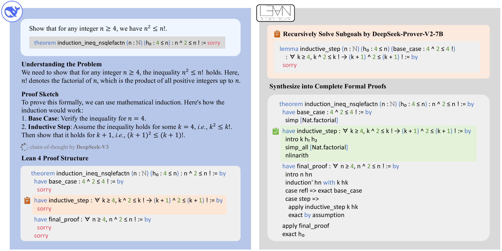
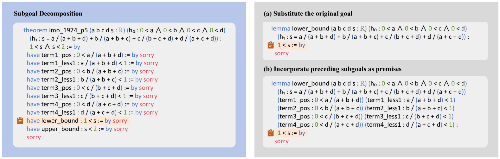

DeepSeek-Prover-V2: Advancing Formal Mathematical Reasoning via Reinforcement Learning for Subgoal Decomposition
大模型擅长用自然语言"凭直觉"做数学题，但 Lean 这类证明助手要求每一步都严丝合缝、可被机器逐行验证——两者之间有一条难以跨越的鸿沟。
本文的做法：让通用大模型 DeepSeek-V3 像人一样把难题拆成一串子目标（写成 Lean 里一连串 have ... := by sorry），再用一个小巧的 7B 证明模型去递归地把每个 sorry 填上；所有子目标补全后，拼成完整证明，并和 DeepSeek-V3 的思维链配对，作为冷启动数据，最后用强化学习进一步打通"非形式推理 ↔ 形式化证明"。
结果：DeepSeek-Prover-V2-671B 在 MiniF2F-test 上达到 88.9%，刷新神经定理证明的 SOTA，并首次让形式化证明与自然语言推理的差距明显收窄。
大模型解数学题，靠的是启发式、近似和数据里学来的猜测模式——这种"非形式推理"虽然在竞赛题上很强，但本质上是不严格的。
而 Lean、Isabelle、Coq 这类证明助手建立在严格的逻辑地基上：每一步推理都必须被显式写出、被机器形式化验证，不允许任何含糊、隐含假设或省略。把"高层次的、跳步的人类直觉"翻译成"一丝不苟的形式化语言"，正是神经定理证明长期未解的核心难题。
本文的出发点：能不能让擅长"自然语言推理"的通用大模型，去指挥"形式化证明"的生成？——这正是子目标分解的用武之地。
把形式化证明分层拆解、用自然语言草图来引导，是一条经典思路。最具代表性的是 Jiang et al. 提出的 DSP（Draft, Sketch, and Prove）框架。理解了它，才能看懂本文的改进动机。
DSP 把"从直觉到形式证明"拆成三步流水线：
大模型先用自然语言写一份非形式的证明草稿（像人在草稿纸上推一遍）。
把草稿翻译成 Lean/Isabelle 的证明骨架：保留高层结构，中间留出待证的空缺（conjecture/gap）。
用现成的自动证明器（如 Sledgehammer）逐个补上空缺，最终交给证明助手验证。
它卡在哪？骨架里的空缺要靠传统自动证明器填补，能力有限；草图与形式化是两套独立工具拼接，难以端到端优化，遇到需要多步深推理的难题就力不从心。
本文的关键升级：不再依赖外部自动证明器，而是用 DeepSeek-V3 统一负责"分解 + 形式化"，再用一个 7B 专用模型递归求解子目标，并把整条链路通过冷启动 + 强化学习统一进一个模型——把 DSP 的"拼接式流水线"变成"可训练的闭环"。
注：另一并行工作 Kimina-Prover 采用反向流程——先收集完整形式化证明及其非形式对照，再用通用推理模型"逆合成"出中间的自然语言思考块；本文则是正向地把自然语言证明直接形式化成结构化证明草图。
整套框架靠两个互补的模型协作：用 DeepSeek-V3 做"高层分解 + 形式化"，用一个 7B 证明模型填补每个子目标的细节。这样既借到了大模型的推理能力，又把昂贵的证明搜索交给小模型，大幅降低算力开销。
读题 → 自然语言证明草图 → 形式化成一串带 sorry 的 have 子目标。
逐个把 sorry 子目标证出来，前序结论可作为后续前提。
子目标证明拼成完整证明，配上 V3 思维链做冷启动，再用 GRPO 强化学习。
给定一个待证的 Lean 定理，先让 DeepSeek-V3 用自然语言分析问题、把证明拆成若干小步，并把每一步翻译成对应的 Lean 形式化陈述。关键在于：不要求它写出完整证明，只要写出高层证明草图——最终产物是一串 have 语句，每个都以 sorry 占位，代表一个待解决的子目标。这正模仿了人类"先把大定理逐步归约为更易处理的引理"的习惯。
-- DeepSeek-V3 产出的证明草图（每个 sorry = 一个子目标） theorem induction_ineq_nsqlefactn (n : ℕ) (h₀ : 4 ≤ n) : n ^ 2 ≤ n ! := by have base_case : 4 ^ 2 ≤ 4 ! := by sorry have inductive_step : ∀ k ≥ 4, k ^ 2 ≤ k ! → (k + 1) ^ 2 ≤ (k + 1) ! := by sorry have final_proof : ∀ n ≥ 4, n ^ 2 ≤ n ! := by sorry

have（base_case / inductive_step / final_proof），每个都以红色 sorry 收尾，标记一个待填的子目标。inductive_step 单独拎出来，写成一条独立 lemma，由 DeepSeek-Prover-V2-7B 去补出真正的证明（intro / simp_all / nlinarith 等 tactic）。sorry 被真实 tactic 取代（绿色高亮的 inductive_step 已被证出），最终 apply final_proof 收束，得到一份能被 Lean 验证的完整证明。一句话总结：大模型负责"怎么想"，小模型负责"怎么写严谨"，两者产物合并成训练大模型形式推理的燃料。
拿到这串 have 子目标后，怎么逐个攻克？本文用一个简单而有效的递归策略，把每个子目标改写成可独立求解的引理，交给 7B 模型：
have 里的子目标表达式提取出来，替换掉原问题的目标，得到一条只证这一小步的 lemma。类型 (b) 用于复杂问题的递归求解；而 (a) 和 (b) 都会被纳入下面的课程学习。把繁重的证明搜索交给 7B 小模型，正是为了降低算力。

imo_1974_p5 被分解成一长串 have：term1_pos / term1_less1 / …（各项的上下界）、以及 lower_bound、upper_bound 等，每条都带 sorry。高亮的是要进一步处理的 lower_bound : 1 < s。lower_bound 单独抽出来，替换原目标，生成一条只需证 1 < s 的 lemma（保留原始假设 h₀、h₁）。这是最"干净"的单步引理。1 < s。这样求解器可以直接利用这些中间结论。一句话总结：同一个子目标，"裸证"（a）和"带前提证"（b）两种写法，分别服务于训练样本扩充与难题递归攻坚。
训练证明模型需要大量形式化题目，但直接形式化人类文本得到的训练信号往往稀疏（大部分尝试失败、没有正奖励）。本文用上一步生成的两类子目标定理（带前提 / 不带前提）来扩充题库，并把它们纳入专家迭代（expert iteration），搭出一条难度递增的课程，引导模型系统性地啃下精选的难题（比如 MiniF2F-valid 里的硬骨头）。这一思路与 AlphaProof 的测试时强化学习同源——围绕目标问题生成变体来增强能力。
冷启动数据怎么来：挑出那些 7B 模型端到端证不出来、但所有子目标都被逐个证出的难题，把子目标证明拼成原题的完整证明，再接到 DeepSeek-V3 的思维链后面——于是得到一份"非形式推理 + 后续形式化"浑然一体的高质量样本。这样能攒出数百条冷启动数据，作为训练 DeepSeek-Prover-V2 的地基。
强化学习阶段：在冷启动微调之后，用 GRPO（Group Relative Policy Optimization）做强化学习。它不需要单独的 critic 模型，而是对每道题采样一组候选证明、按相对奖励来优化策略。奖励是二值的——Lean 验证通过得 1，否则得 0。
训练中发现一个问题：模型生成的证明结构常常偏离思维链给出的子目标分解。于是在训练早期加入一项一致性奖励（consistency reward），惩罚结构错位、强制最终证明包含所有分解出的 have 子目标。实践证明，这种对齐显著提升了复杂多步定理的证明准确率。
DeepSeek-Prover-V2 通过两阶段训练，建立起两种互补的证明生成模式：
| 模式 | 特点 | 用途 |
|---|---|---|
| non-CoT 非思维链 | 快速生成简洁的 Lean 证明代码，不带显式中间推理 | 推理 / 验证周期快，用于第一阶段的专家迭代与数据收集 |
| CoT 思维链 | 先显式展开中间推理步骤，强调透明与逻辑递进，再写最终证明 | 高精度模式，第二阶段用冷启动 CoT 数据 + 强化学习强化 |
DeepSeek-V3-Base-671B，恒定学习率 5e-6，上下文窗口 16,384 tokens；语料 = 专家迭代得到的 non-CoT 数据 + 冷启动 CoT 数据。DeepSeek-Prover-V1.5-Base-7B 的上下文从 4,096 扩展到 32,768，用 671B 在 RL 阶段的 rollout 数据微调，并施加同样的 RL 阶段，得到 DeepSeek-Prover-V2-7B。下面按"下一步"逐步演示一条难题如何从自然语言走到可被验证的形式化证明、并最终变成训练数据：
思维链模式在形式化证明上有实质性优势，证实了"推理时扩展（inference-time scaling）"在形式化定理证明领域同样成立——把难题拆成中间步骤确实有用。代价是输出更长：671B 在 MiniF2F-test 上 CoT 平均生成约 6752 tokens，non-CoT 仅约 762。
有趣的是，在 non-CoT 设定下，671B 的平均输出反而比 7B 更长。细看发现：即便没被要求显式推理，大模型也会在证明代码里插入简短的自然语言注释，像隐式的推理步骤。说明高容量模型即使没有 CoT 提示，也会把中间推理"内化又外显"出来。
在 15 道精选的 AIME 24&25 题上：DeepSeek-V3 用自然语言找答案（Maj@16）解出 8/15；而 DeepSeek-Prover-V2-671B 在给定正确答案、需构造形式化证明的更难设定下解出 6/15。两者只差 2 题——这表明大模型的"语言理解"与"形式逻辑严谨性"正趋于一致，形式化与非形式数学推理之间的鸿沟正在明显收窄。
DeepSeek-Prover-V2-671B（CoT 模式）在从高中竞赛到本科数学的多个基准上一致超越所有基线，刷新神经定理证明的 SOTA。
本文还顺带贡献了一个新基准 ProverBench：325 道形式化题目，其中 15 道取自最新 AIME 24&25 竞赛（数论与代数，过滤掉几何/组合/计数等在 Lean 中难表达的题型），其余 310 道来自教材与教程，覆盖数论、代数、微积分、分析、概率等领域，便于更全面地评测。
本文提出了一条完整的冷启动推理数据合成流水线：以 DeepSeek-V3 为统一模型完成子目标分解与引理形式化，用 7B 小模型高效求解子目标、显著降低算力；课程学习用子目标"造题"由易到难；把完整形式证明与 V3 思维链配对得到冷启动数据，再经强化学习打通"非形式思维 ↔ 形式结构"。未来方向：把这套范式扩展成 AlphaProof 式系统，去攻克 IMO 级别的数学难题。